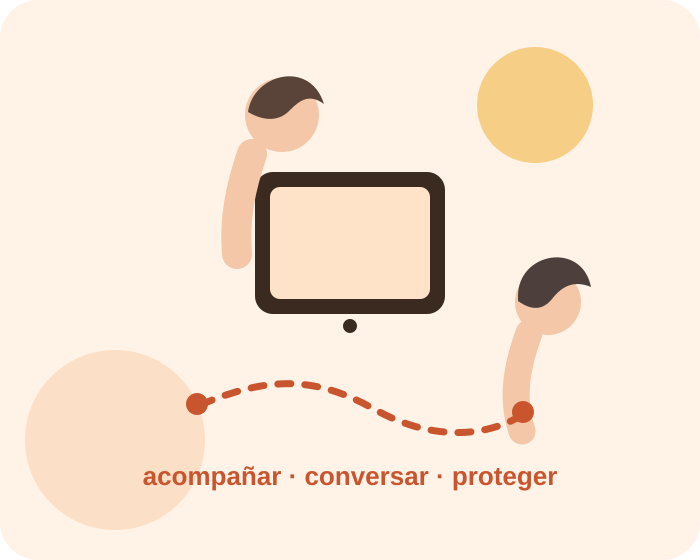
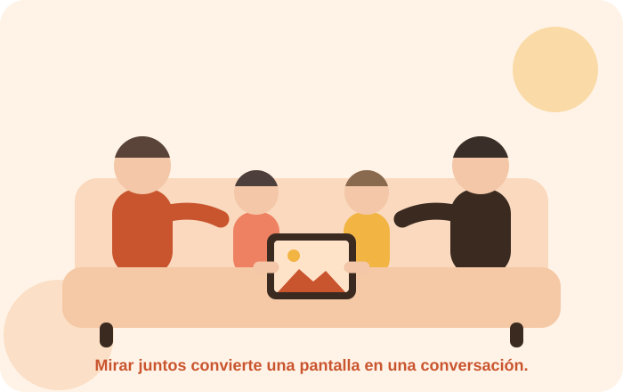

Desarrollo
Hablar, jugar, explorar y relacionarse son experiencias esenciales para aprender durante los primeros años.
EDUCACIÓN · PRIMERA INFANCIA · TECNOLOGÍA
Un espacio educativo para familias y docentes que quieren acompañar a niñas y niños pequeños en un mundo digital con criterio, afecto, seguridad y propósito.
✓ Tecnología al servicio del desarrollo, no al revés.

NUESTRA MIRADA
En la primera infancia, el contexto importa: edad, contenido, propósito, acompañamiento y equilibrio con juego, sueño, movimiento y relaciones humanas.

TRES IDEAS CLAVE
Hablar, jugar, explorar y relacionarse son experiencias esenciales para aprender durante los primeros años.
El adulto selecciona contenidos, establece límites y convierte una experiencia digital en una oportunidad para conversar.
La protección empieza antes de publicar una foto o compartir información que pertenece a la vida del niño.
ENTRADAS DEL BLOG

Antes de que un niño pueda opinar sobre su propia imagen, ya existe en internet. Qué significa esa huella y cómo cuidarla desde hoy.
Leer la entrada →
En educación inicial, una pantalla enriquece la experiencia solo cuando el docente decide antes, acompaña durante y propone después.
Leer la entrada →
No se trata de ser una familia perfecta frente a la tecnología, sino de proteger unos pocos momentos y sostenerlos con coherencia.
Leer la entrada →
El tiempo de pantalla no se entiende solo en minutos. Qué contenido, con qué propósito y junto a quién importan tanto como el reloj.
Leer la entrada →MATERIALES DESCARGABLES